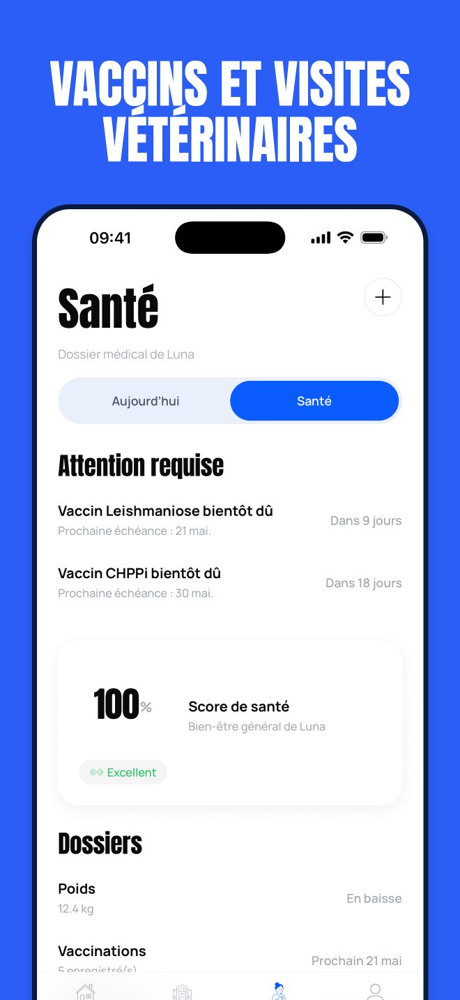
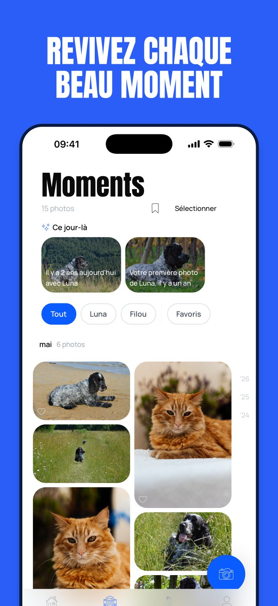
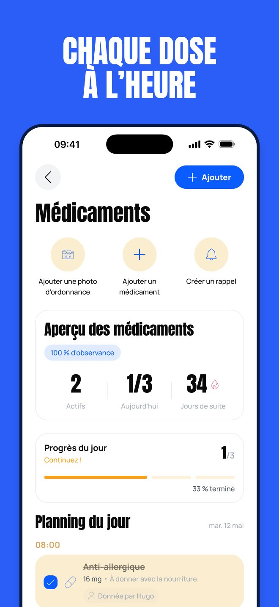

Pet Moments
Suivi vaccins et médicaments
Chaque dose à l'heure et chaque vaccin noté pour votre chien ou votre chat, avec les photos que vous ne voulez jamais perdre, au même endroit.




Pet Moments suit les médicaments et les horaires de prise, vous rappelle les vaccins avant l'échéance et garde en ordre visites et poids. Commencez gratuitement sans compte, partagez les soins avec vos proches au besoin et remettez à votre vétérinaire un dossier clair en quelques secondes.
MÉDICAMENTS ET PRISES
- Ajoutez chaque médicament avec ses horaires et recevez un rappel pour chaque prise
- Cochez une prise d'un geste et voyez le programme du jour en un coup d'œil
- Suivez l'observance et les séries de prises, avec une alerte quand il faut racheter
- Gardez les photos d'ordonnance à côté du médicament concerné
VACCINS, VISITES VÉTO ET POIDS
- Notez les vaccins et voyez ceux qui sont à jour, bientôt dus ou en retard
- Recevez un rappel à l'approche d'un vaccin
- Consignez les visites chez le vétérinaire, les affections et le numéro de puce
- Suivez le poids sur un graphique
- Créez un dossier PDF avec les informations que demande votre vétérinaire
LE JOURNAL DE VOTRE VIE ENSEMBLE
- Enregistrez des photos avec une note, marquez vos favoris et rangez-les en albums
- « Ce jour-là » vous rappelle un souvenir du même jour les années précédentes
- Partagez un moment sous forme de carte story
- Si un animal décède, son dossier et ses photos restent avec vous
SOINS QUOTIDIENS
- Notez repas, eau, promenades, toilettage et besoins d'un geste
- Voyez ce qu'il reste à faire aujourd'hui et construisez des séries
- Recevez un bilan hebdomadaire pour chaque animal
SOINS PARTAGÉS
- Invitez votre famille, un pet-sitter ou un promeneur
- Attribuez des tâches et voyez qui a fait quoi
- Choisissez qui peut modifier et qui peut seulement consulter
CONFIDENTIALITÉ
- Pas de publicité, et vos données ne sont jamais vendues
- Commencez sans compte ; connectez-vous pour synchroniser vos appareils
- Exportez vos données quand vous le souhaitez
La version gratuite comprend 1 animal, 1 médicament actif avec 1 horaire de prise et 5 photos, ainsi que les soins quotidiens, les dossiers de santé de base et l'export des données. Premium débloque animaux, médicaments, horaires de prise et photos illimités, les soins partagés, les photos d'ordonnance et le dossier pour le vétérinaire.